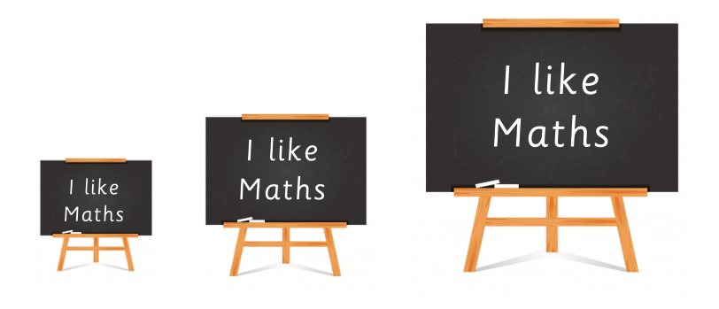

Similar figures are geometric shapes that have the same shape but differ in size. They maintain the same ratio of corresponding sides and equal corresponding angles. Study Figure 3.1 which illustrates the concept of similar objects.

In Figure 3.1, the objects are similar because they have the same shape but differ in size. Based on this experience, a simple method of obtaining similar figures is by uniformly scaling (enlarging or shrinking) the original figure. Engage in Activity 3.2 to explore more about similarity of figures.